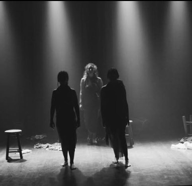
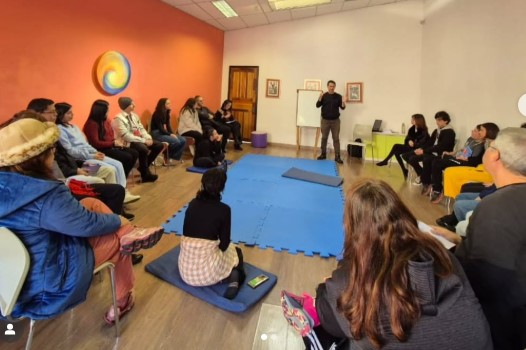

Nossa História
A trajetória do Diegétika através dos anos
A trajetória do Diegétika através dos anos
O Grupo de Estudos de Artes e Filosofias Diegétika nasceu em 2021, em meio à atmosfera peculiar de recolhimento e reinvenção imposta pela pandemia de Covid-19. Idealizado e conduzido pelo professor Felipe Quadra, o grupo partiu de uma trajetória já existente na criação teatral para expandir-se em novas direções, impulsionado pelo desejo de manter viva a investigação artística mesmo à distância.
O isolamento tornou-se solo fértil para o aprofundamento teórico e filosófico, com estudos que atravessam a simbologia, a mitologia, a semiótica, a história da Arte e a leitura de clássicos, sempre em diálogo com o fazer criativo. Desde então, Diegétika vem se constituindo como uma companhia de artistas-pesquisadores, reunidos por afinidades poéticas e pelo compromisso com uma criação livre, independente e movida pelo amor à criação artística. Mais do que um coletivo teatral, Diegétika é um espaço de experimentação contínua, onde corpo, palavra e imagem se entrelaçam. As investigações do grupo transbordam para a poesia, a performance, a dança, o cinema e o audiovisual — em uma prática artística que é também filosofia encarnada, gesto simbólico e resistência sensível.

O Grupo Diegétika teve início em 2021, em pleno isolamento da pandemia de Covid-19, idealizado, coordenado e dirigido pelo professor e Mestre em Educação Felipe Quadra. Sua primeira formação reuniu Aline Bernardino (produtora cultural), Alssa Ricieri (produção cultural e atriz em formação), Julia Campos (atriz), Mariana O’Donnell (artista circense e atriz em formação) e Maria Rodrigues (atriz e advogada). Ainda naquele ano, o grupo lançou o documentário curta-metragem Entre o choro e o riso, sobre palhaços e artistas cômicos na pandemia, premiado como Melhor Documentário e Melhor Direção de Arte pela Hollywood Film Academy. Em 2022, produziu o ficcional Olho d’água — uma narrativa simbólica sobre duas irmãs em processo de reconciliação — que também faturou o prêmio de Melhor Direção de Arte e recebeu indicação ao Melhor Curta HFA. Na mesma temporada, realizou sua primeira leitura filosófica aberta ao público, com palestra e leitura integral de O Banquete, de Platão.
Em 2023, Diegétika estreou sua primeira montagem teatral, Sobre Viver, refletindo sobre a condição do artista em tempos de guerra. No mesmo ano promoveu uma oficina de consciência corporal e desenvolvimento de Ki, aplicando conceitos das artes marciais orientais ao trabalho cênico. No ano seguinte, aprofundou estudos no método de Stanislavski e conduziu a leitura completa de Sonhos de uma Noite de Verão, de Shakespeare, recebendo novos integrantes em sua companhia. Já em 2025, Diegétika deu voz a cada participante no projeto de Solos Cênicos, com monólogos que investigam a simbologia do fluir da vida. O coletivo segue em expansão, planejando novos processos criativos e leituras para os próximos anos.

Início do grupo durante a pandemia, primeiros estudos e laboratórios criativos.
Do choro ao riso, um curta-documentário sobre a vida do artista cômico e seus desafios, especialmente durante a pandemia.
Olho d’água é um drama que conta a história de duas irmãs unidas por um acidente, por seus sonhos, e por suas mágoas passadas. Hannah jura cuidar de sua irmã Julia, em coma desde o acidente que sofreu meses atrás. Uma viagem ao inconsciente onde lembranças e memórias se entrelaçam com o futuro nebuloso das personagens.
Leitura completa aberta ao público e conversa filosófica sobre a obra.
Inspirada em histórias e relatos reais a peça conta a história de três irmãs, que tiveram o sonho de ser artistas interrompido pela crueldade e frieza da guerra. Como andarilhas, Katrina, Olga e Yullia tentam manter o ideal juvenil da construção de uma peça de teatro mesmo vivendo no caos e nas ruínas de um país em guerra. Sobre viver, é um drama que entrelaça mitos, poesia e conto, resignificando os símbolos da trindade feminina, como as fiadeiras do Destino, a deusa Tríplice, e as Górgonas. Uma peça sobre o teatro, sobre Amor, sobre a resiliência, a perda e a esperança.
O Grupo Diegetika teve a alegria de convidar amigos a embarcar conosco no mundo de Willian Shakespeare em uma leitura coletiva da peça "Sonho de uma Noite de Verão" 🌙✨ .
Entre diversas conceitualizações, o Ki (Qi/Chi para os chineses) pode ser entendido como energia vital, e também, como movimento da nossa consciência que se correlaciona com o físico e o emocional.
Aprofundamento teórico-prático com o elenco, preparando novos passos do grupo.
Sobre Viver no Fringe/Curitiba, Festival de Pinhais e Festival de São José dos Pinhais.
Neste trabalho, quatro breves monólogos trazem a reflexão sobre a fluidez e a brevidade da existência perante as águas da vida, da morte e os desafios que surgem entre esse espaço.
O objetivo era unir artistas, atrizes, atores, contadores de histórias e demais pessoas interessadas em teatro, literatura e filosofia, para refletir sobre a obra clássica e sua importância.
A Mostra de Cenas Curtas apresenta o resultado de um ciclo de estudos do Grupo Diegétika, no qual cada participante desenvolveu um monólogo inspirado por investigações em Simbologia, Filosofia e Mitologia. O processo incluiu não apenas aulas teóricas, mas também práticas voltadas ao corpo, à presença cênica, à improvisação, à anatomia e à dramaturgia. O espetáculo reúne sete cenas em formato de monólogo, que propõem ao público reflexões poéticas e sensíveis sobre temas universais: a Ausência, a Verdade, a Saudade, a Indiferença, os Instintos e a Memória.
Criada a partir dos monólogos e pesquisas de filosofia, psicologia e simbolismo, o drama dá voz aos nossos conflitos internos. A Saudade, o Instinto, a Ausência, a Guerra, a Memória e a Narrativa, são peças de um jogo rumo ao silêncio e à descoberta de que a verdade mais profunda habita o vazio que resta quando todas as vozes se calam.

Arte como investigação, corpo como linguagem, cena como reflexão. A criação no Diegétika integra estudo teórico e prática cênica, atravessando mitologia, simbologia, história da arte e clássicos, em diálogo com a experiência viva do público.